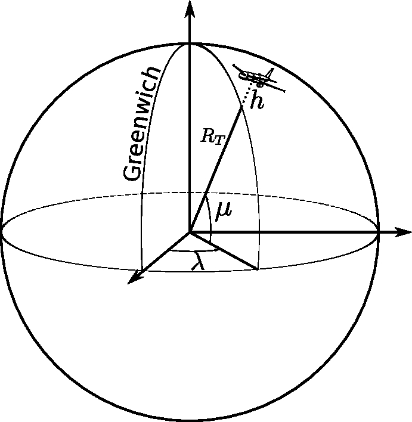
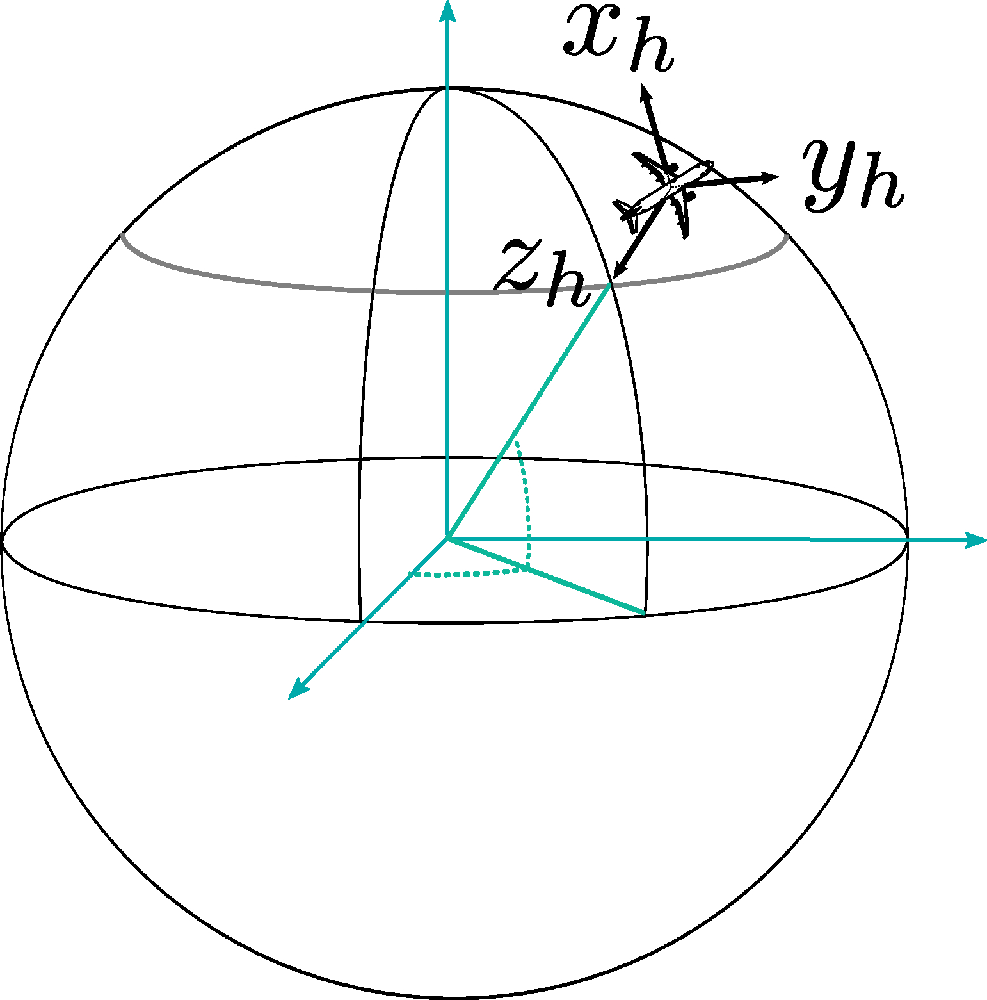
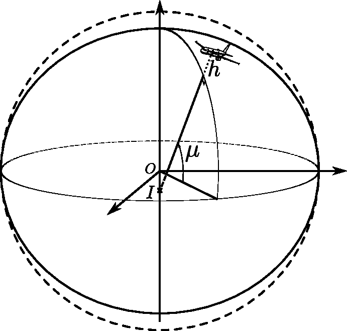
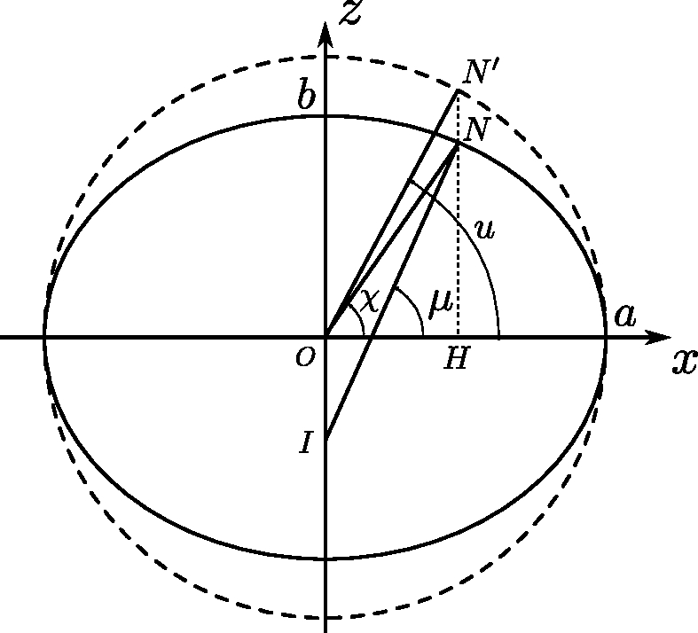
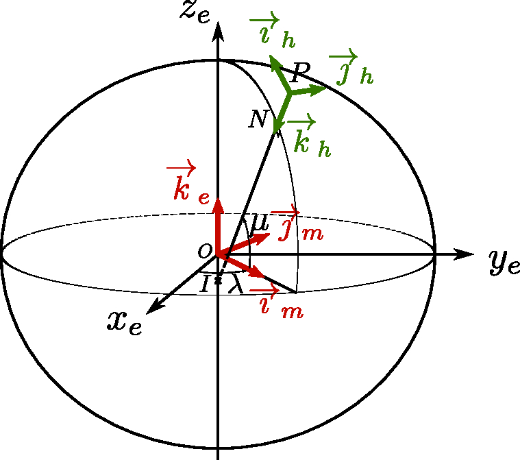
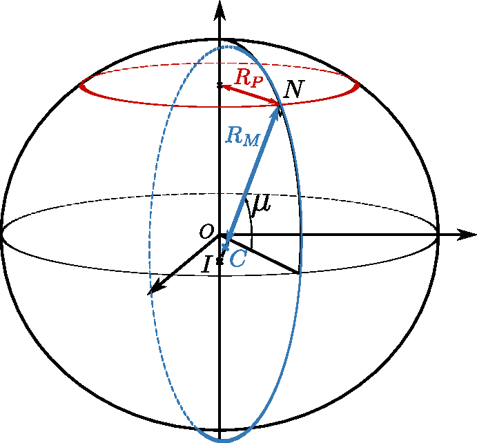

9 Earth models
This chapter provides a few notions of geodesy that are useful to the computation of aircraft trajectories. For a more complete documentation, the reader may refer to the first chapters of the book of Michel Capderou [1] on satellites, and also to the book of Dominic J. Diston [2].
There are several possible models of the Earth’s surface, among which the geoid, the ellipsoid of revolution and the sphere. The geoid is defined as the equipotential surface of the gravity field, conforming to the shape defined by the actual mean sea level. This equipotential surface is not easy to compute and is often approximated by a simpler model: the ellipsoïd of revolution, where the Earth is considered as a sphere flattened at the poles. In an ellipsoid of revolution, each section in a meridian plane is an ellipse of parameters \(a\) for the major axis (lying in the equatorial plane), and \(b\) for the minor axis (between the South and North poles). The parameters \(a\) and \(b\) of the ellipse are constant, whatever the meridian. For some applications or computations, an even simple model can be used: a spherical Earth model.
Let us briefly describe the spherical model and the ellipsoid of revolution in the rest of this chapter, starting with the sphere for simplicity’s sake.
9.1 The Spherical Earth Model
9.1.1 The Earth-Centered, Earth-Fixed (ECEF) Coordinate System
The Earth is modeled here as a sphere of radius \(R_T\). Let us define a reference frame fixed to the Earth and for which the axis \(z_e\) passes through the poles and is oriented from the South pole to the North pole. The \(x_e\) axis is chosen in the equatorial plane and passes through the center of the Earth and through the Greenwich meridian (an arbitrarily chosen meridian). The \(y_e\) completes this system and is chosen so as to form a direct orthonormal coordinate system centered on \(O\), the Earth’s center.
In the following, we shall denote \((\overrightarrow{\imath}_e, \overrightarrow{\jmath}_e, \overrightarrow{k}_e)\) the orthonormal vectors of the ECEF reference frame \(Ox_ey_ez_e\).

In this coordinate system, the position of a point \(P\) is given by its latitude, longitude, and distance from the center of Earth, or more simply its altitude \(h\) above the surface of the globe, as illustrated in Figure 9.1. The latitude, denoted \(\mu\) in the following, is the angle between the equatorial plane \(x_eOy_e\) and \(\overrightarrow{OP}\). The longitude, denoted \(\lambda\), is the angle between the Greenwich meridian plane \(x_eOz_e\) and the meridian plane containing \(\overrightarrow{OP}\).
9.1.2 The North-East-Down (NED) reference frame
For given point \(P\), located on or at proximity of the Earth’s surface, let us define another system of axes, called the NED system, or the local horizontal reference frame centered on point \(P\). In this NED frame, the \(x_h\) axis is in the local horizontal plane and passes through \(P\), pointing to the North. The \(y_h\) axis is also in the horizotal plane and passes through \(P\), but it points to the East. Finally, the vertical axis \(z_h\) passes through \(P\) and points downward, toward the center of the Earth. The axes system \(Ox_hy_hz_h\) is represented on Figure 9.2.
An orthonormal basis of vectors \((\overrightarrow{\imath}_h, \overrightarrow{\jmath}_h, \overrightarrow{k}_h\)) is associated to this system.

9.1.3 Coordinates of a Point on the Sphere
The Cartesian coordinates – in the ECEF system – of a point \(P\) at altitude \(h\) are given by Equation 9.1:
\[ \begin{array}{l}\{\overrightarrow{OP}\}_{\mathit{ECEF}}\\ \\ \\\end{array} \Bigg| \begin{array}{l} x_e= (R_T+h) \cos \mu \cos \lambda\\ y_e= (R_T+h) \cos \mu \sin \lambda\\ z_e= (R_T+h) \sin \mu \end{array} \tag{9.1}\]
In the NED system where the unit vector \(\overrightarrow{k}_h\) points downward from \(P\), the position vector can be expressed very simply by Equation 9.2, and the coordinates by Equation 9.3.
\[ \overrightarrow{OP} = -(R_T +h) \overrightarrow{k}_h \tag{9.2}\]
\[ \begin{array}{l}\{\overrightarrow{OP}\}_{\mathit{NED}}\\ \\ \\\end{array} \Bigg| \begin{array}{l} x_h= 0\\ y_h= 0\\ z_h= - (R_T+h) \end{array} \tag{9.3}\]
9.1.4 Velocity of a Point with Respect to the ECEF Frame
Let \(Ox_my_mz_e\) be the orthonormed direct system such that \(x_mOz_e\) is the meridian plane containing \(P\), the position of the mobile agent. This referential is obtained simply by rotating the ECEF axes \(Ox_ey_ez_e\) of an angle \(\lambda\) around the axis of the poles \(z_e\). Let \((\overrightarrow{\imath}_m, \overrightarrow{\jmath}_m, \overrightarrow{k}_e)\) be the orthonormal basis associated with the reference frame fixed too the meridian plane passing through \(P\).
The velocity with respect to the ECEF reference frame, considered as fixed, is given in Equation 9.4, taking into account the angular speed \(\overrightarrow{\Omega}_{Ox_my_mz_e/\mathit{ECEF}} = \dot{\lambda} \overrightarrow{k}_e\) of the \(Ox_my_mz_e\) system around the axis \(Oz_e\):
\[ \begin{aligned} \frac{d\overrightarrow{OP}}{dt}_{/\mathit{ECEF}} = \frac{d\overrightarrow{OP}}{dt}_{/Ox_my_mz_e} + \overrightarrow{\Omega}_{Ox_my_mz_e/\mathit{ECEF}} \wedge\overrightarrow{OP}\\ \end{aligned} \tag{9.4}\]
The derivative \(\frac{d\overrightarrow{OP}}{dt}_{/Ox_my_mz_e}\) is obtained simply by deriving Equation 9.2 assuming \(Ox_my_mz_e\) is fixed. With this assumption, we place ourselves in the meridian plane and only take into account the rotational motion of \(\overrightarrow{k}_h\) in this plane when expressing its derivative :
\[ \frac{d\overrightarrow{OP}}{dt}_{/Ox_my_mz_e} = -(R_T+h)\frac{d\mu}{dt}\frac{d\overrightarrow{k}_h}{d\mu} - \dot{h} \overrightarrow{k}_h = \dot{\mu}(R_T+h) \overrightarrow{\imath}_h - \dot{h} \overrightarrow{k}_h \tag{9.5}\]
By combining Equation 9.5 and Equation 9.4, the velocity with respect to the ECEF reference frame is then expressed (see Equation 9.6) in a simple form in the basis of vectors \((\overrightarrow{\imath}_h, \overrightarrow{\jmath}_h, \overrightarrow{k}_h)\) associated with the local horizontal frame NED.
\[ \begin{aligned} \frac{d\overrightarrow{OP}}{dt}_{/\mathit{ECEF}} & = \dot{\mu}(R_T+h) \overrightarrow{\imath}_h - \dot{h} \overrightarrow{k}_h + \left(\dot{\lambda} \overrightarrow{k}_e\right) \wedge\left(-(R_T +h) \overrightarrow{k}_h\right)\\ & = \dot{\mu}(R_T+h) \overrightarrow{\imath}_h + \dot{\lambda}(R_T+h)\cos\mu \overrightarrow{\jmath}_h - \dot{h} \overrightarrow{k}_h \end{aligned} \tag{9.6}\]
Adopting the slightly unwieldy but explicit notation convention where “\(/\mathit{ECEF}\)” means “with respect to the Earth’s reference frame” and \(\{.\}_{\mathit{NED}}\) means “in the NED coordinate system”, the coordinates of the velocity with respect to the Earth are given by Equation 9.7.
\[ \left\{\frac{d\overrightarrow{OP}}{dt}_{/\mathit{ECEF}}\right\}_{\mathit{NED}} = \begin{pmatrix} \dot{\mu}(R_T+h)\\ \dot{\lambda}(R_T+h)\cos\mu\\ - \dot{h} \end{pmatrix} \tag{9.7}\]
9.2 The Ellipsoid of Revolution
A more accurate approximation than the sphere of the Earth’s surface is the ellipsoid of revolution. In the ellipsoid model, each section in a meridian plane is an ellipse of major axis \(a\) and minor axis \(b\). The parameters \(a\) and \(b\) of the ellipse are the same in all meridian planes. The approximate surface of the Earth is thus determined by a single ellipse, which is rotated around its minor axis, which is coincident with the polar axis.
In the following, we will denote \(e\) the eccentricity of the ellipse, which verifies the following equation Equation 9.8:
\[ e^2=1-\frac{b^2}{a^2} \tag{9.8}\]
The equation of the ellipse is recalled in Equation 9.9, where \(z\) is the minor axis (the polar axis), and \(x\) is the major axis of the ellipse:
\[ \frac{x^2}{a^2} + \frac{z^2}{b^2} = 1 \tag{9.9}\]
9.2.1 Several Definitions of Latitude

Historically, latitude was calculated by measuring angles between the local horizontal plane and the direction of reference stars (the North Star for example). The horizontal plane is determined as being perpendicular to the direction of the plumb line. This direction is therefore the normal to the equipotential surface represented by the local geoid. This latitude measured “on the ground” is called the “astronomical latitude”.
The geodetic latitude is defined as the angle between the equatorial plane and the line perpendicular, at the considered point \(N\), to the surface of the ellipsoid of revolution (see Figure 9.3). Note that this perpendicular line does not pass through the center \(O\), but intersects the polar axis at a point \(I\). The distance \(IN\) is sometimes called the “great normal” and is denoted \(\mathcal{N}\).
The geocentric latitude is the angle between the equatorial plane and the axis going from the center of the Earth \(O\) to the point \(N\) considered. Finally, the parametric latitude or reduced latitude is used for calculation purposes and corresponds to the geocentric latitude of a point \(N'\) (see Figure 9.4) on a circle with center \(O\) and radius \(a\). This point \(N'\) is obtained by following the parallel to the axis \(Oz\) passing through the point \(N\). The geocentric and parametric latitudes are illustrated in Figure 9.4.
In the rest of this chapter, \(\mu\) will denote the geodetic latitude, \(\chi\) the geocentric latitude, and \(u\) the parametric latitude.

9.2.2 Some Useful Characteristics of the Ellipse
9.2.2.1 Relations between geodetic, geocentric, and parametric latitudes
Let us remind that the ellipse is an affine transformation, of axis \(Ox\) of direction \(Oz\) and of ratio \(\frac{b}{a}\), of the circle of center \(O\) and radius \(a\). In other words, the points of the ellipse are obtained from the circle of center \(O\) and radius \(a\) by applying a multiplicative factor \(\frac{b}{a}\) to the coordinate \(z\).
Therefore, in Figure 9.4, we observe that \(\frac{HN}{OH} = \frac{b}{a} \frac{HN'}{OH}\). We immediately deduce the relation Equation 9.10 between the geocentric latitude \(\chi\) and the parameterized latitude \(u\).
\[ \tan \chi = \frac{b}{a}\tan u \tag{9.10}\]
Moreover, by differentiating Equation 9.9, we obtain the slope of the tangent to the ellipse at point \(N\), expressed in Equation 9.11:
\[ \frac{dz}{dx} = - \frac{b^2}{a^2}\frac{x}{z} \tag{9.11}\]
The direction of the normal is then given by Equation 9.12:
\[ \tan \mu = \frac{a^2}{b^2}\frac{z}{x} \tag{9.12}\]
From the definition of geocentric latitude, we can also see that:
\[ \tan \chi = \frac{z}{x} \tag{9.13}\]
From Equation 9.12 and Equation 9.13 we deduce the relation between the geocentric latitude \(\chi\) and the geodetic latitude \(\mu\) :
\[ \boxed{\tan \chi = \frac{b^2}{a^2} \tan \mu} \tag{9.14}\]
By combining Equation 9.10 and Equation 9.14, we can easily deduce the relation Equation 9.15 between the parametric latitude \(u\) and the geodetic latitude \(\mu\):
\[ \tan u = \frac{b}{a} \tan \mu \tag{9.15}\]
9.2.2.2 Coordinates of a point on the ellipse
The point \(N'\) of Figure 9.4 is on a circle of radius \(a\). Its coordinates are simply expressed as a function of the parameterized latitude, as follows:
\[ \begin{array}{l}\{\overrightarrow{ON'}\}_{Oxz}\\ \\ \\\end{array} \Bigg| \begin{array}{l} x= a \cos u\\ z= a \sin u\\ \end{array} \]
The point \(N\) on the ellipse is obtained by an affine transformation of the point \(N'\), of ratio \(\frac{b}{a}\). The \(z\)-coordinate of \(N\) is therefore simply \(\frac{b}{a}(a \sin u\)). The coordinates of \(N\) are given by Equation 9.16:
\[ \begin{array}{l}\{\overrightarrow{ON}\}_{Oxz}\\ \\ \\\end{array} \Bigg| \begin{array}{l} x= a \cos u \\ z= b \sin u \end{array} \tag{9.16}\]
Furthermore, considering the geodetic latitude \(\mu\) and the great normal \(\mathcal{N} = IN\), we observe that \(x= \mathcal{N} \cos\mu\). Taking into account this expression and Equation 9.15, the coordinate \(z\) is rewritten as a function of the geodetic latitude as follows:
\[ \begin{aligned} z= b \sin u = \frac{b}{a} \tan u (a\cos u) = \frac{b^2}{a^2} \tan \mu (\mathcal{N}\cos \mu) = \mathcal{N}\frac{b^2}{a^2} \sin \mu \end{aligned} \]
By introducing the eccentricity Equation 9.8, we finally obtain the coordinates of \(N\) as a function of the geodetic latitude \(\mu\), expressed in the following equation Equation 9.17:
\[ \begin{array}{l}\{\overrightarrow{ON}\}_{Oxz}\\ \\ \\\end{array} \Bigg| \begin{array}{l} x= \mathcal{N} \cos \mu\\ z= \mathcal{N} (1- e^2)\sin \mu \end{array} \tag{9.17}\]
9.2.2.3 Expression of the great normal \(\mathcal{N}\)
The expression of the great normal \(\mathcal{N}\) is simply found from Equation 9.17 and the equation of the ellipse Equation 9.9:
\[ \begin{aligned} & \frac{x^2}{a^2} + \frac{z^2}{b^2} = 1\\ \Leftrightarrow \quad & \frac{\mathcal{N}^2 \cos^2\mu}{a^2} + \frac{\mathcal{N}^2(1- e^2)^2\sin^2 \mu}{b^2} = 1\\ \Leftrightarrow \quad & \mathcal{N}^2 \left[ 1- \sin^2\mu + \frac{a^2}{b^2}(1- e^2)^2\sin^2\mu \right] = a^2\\ \Leftrightarrow \quad & \mathcal{N}^2 \left[ 1- \sin^2\mu + (1- e^2)\sin^2\mu \right] = a^2\\ \Leftrightarrow \quad & \mathcal{N}^2 \left( 1- e^2\sin^2\mu \right) = a^2 \end{aligned} \]
The great normal can be expressed as follows: \[ \boxed{\mathcal{N} = \frac{a}{\sqrt{1-e^2 \sin ^2 \mu}}} %)^{\frac{1}{2}}} \tag{9.18}\]
9.2.3 The ECEF and Other Reference Frames for the Ellipsoid of Revolution

In the case of the ellipsoid of revolution, we use an ECEF reference frame similar to the spherical model. Its system of axes is noted here \(Ox_ey_ez_e\), with a base of orthonormal vectors \((\overrightarrow{\imath}_e, \overrightarrow{\jmath}_e, \overrightarrow{k}_e)\). For calculation purposes, we will also use an orthonormal reference frame \((\overrightarrow{\imath}_m, \overrightarrow{\jmath}_m, \overrightarrow{k}_e)\) obtained by a rotation of angle \(\lambda\) around the polar axis \(z_e\). The vectors \(\overrightarrow{\imath}_m\) and \(\overrightarrow{k}_e\) are thus in the meridian plane passing through \(N\) (and \(P\)). We will denote \(Ox_my_mz_e\) the associated axis system.
The local horizontal reference frame NED, with orthonormal base \((\overrightarrow{\imath}_h, \overrightarrow{\jmath}_h, \overrightarrow{k}_h)\), is similar to the one of the spherical model, except that the vertical direction determined by vector \(\overrightarrow{k}_h\) does not pass through the center of the Earth but is defined as the normal to the surface of the ellipsoid. The vector \(\overrightarrow{\imath}_h\) points to the North, and \(\overrightarrow{\jmath}_h\) to the East. These different reference points and axis systems are described in Figure 9.5.
9.2.4 Coordinates of a Point on the Ellipsoid
The position of a point \(P\) located at an altitude \(h\) above the surface of the ellipsoid of revolution can be broken down as follows (see Figure 9.5), where the point \(N\) (nadir) is the point on the surface of the ellipsoid located at the vertical of the point \(P\): \[\overrightarrow{OP} = \overrightarrow{ON} + \overrightarrow{NP}\]
9.2.4.1 Coordinate of the Nadir Point \(N\)
\[ \begin{array}{l}\{\overrightarrow{ON}\}_{Ox_my_mz_e}\\ \\ \\\end{array} \Bigg| \begin{array}{l} x_m= \mathcal{N} \cos \mu\\ y_m= 0\\ z_e= \mathcal{N} (1-e^2)\sin \mu\\ \end{array} \tag{9.19}\]
\[ \begin{array}{l}\{\overrightarrow{ON}\}_{\mathit{ECEF}}\\ \\ \\\end{array} \Bigg| \begin{array}{l} x_e= \mathcal{N} \cos \mu \cos \lambda\\ y_e= \mathcal{N} \cos \mu \sin \lambda\\ z_e= \mathcal{N} (1-e^2)\sin \mu \end{array} \tag{9.20}\]
In these equations, \(\mathcal{N}\) is the “great normal” at point \(N\), given by Equation 9.18.
9.2.4.2 Coordinates of point \(P\) at altitude \(h\)
\[ \begin{array}{l}\{\overrightarrow{OP}\}_{Ox_my_mz_e}\\ \\ \\\end{array} \Bigg| \begin{array}{l} x_m= (\mathcal{N}+h) \cos \mu\\ y_m= 0\\ z_e= \left[\mathcal{N} (1-e^2)+h\right]\sin \mu\\ \end{array} \tag{9.21}\]
\[ \begin{array}{l}\{\overrightarrow{OP}\}_{\mathit{ECEF}}\\ \\ \\\end{array} \Bigg| \begin{array}{l} x_e= (\mathcal{N}+h) \cos \mu \cos \lambda\\ y_e= (\mathcal{N}+h) \cos \mu \sin \lambda\\ z_e= \left[\mathcal{N} (1-e^2)+h\right]\sin \mu \end{array} \tag{9.22}\]
9.2.5 Velocity of a Point with Respect to the ECEF Frame
\[ \frac{d\overrightarrow{ON}}{dt}_{/Ox_my_mz_e} = \dot{\mu} \left(\frac{d\mathcal{N}}{d\mu} \cos \mu - \mathcal{N}\sin \mu\right) \overrightarrow{\imath}_m + (1-e^2)\dot{\mu}\left(\frac{d\mathcal{N}}{d\mu}\sin\mu + \mathcal{N}\cos\mu\right) \overrightarrow{k}_e %% \begin{pmatrix} %% \dot{\mu} \left(\frac{d\mathcal{N}}{d\mu} \cos \mu - \mathcal{N}\sin \mu\right) \\ %% 0\\ %% (1-e^2)\dot{\mu}\left(\frac{d\mathcal{N}}{d\mu}\sin\mu + \mathcal{N}\cos\mu\right) %% \end{pmatrix} %% \right. \]
\[ \text{with}\quad\frac{d\mathcal{N}}{d\mu} = a e^2\sin\mu\cos\mu\left(1-e^2\sin ^2 \mu\right)^{-\frac{3}{2}} \]
\[ \begin{aligned} \frac{d\overrightarrow{ON}}{dt}_{/Ox_my_mz_e} = & \dot{\mu}\left[ae^2\sin\mu\cos^2\mu\left(1-e^2\sin ^2 \mu\right)^{-\frac{3}{2}} - a\left(1-e^2\sin ^2 \mu\right)^{-\frac{1}{2}}\sin\mu\right]\overrightarrow{\imath}_m\\ & + \dot{\mu}(1-e^2)\left[ae^2\sin^2\mu\cos\mu\left(1-e^2\sin ^2 \mu\right)^{-\frac{3}{2}} + a\left(1-e^2\sin ^2 \mu\right)^{-\frac{1}{2}}\cos\mu\right]\overrightarrow{k}_e\\ = & \dot{\mu}\frac{a}{\left(1-e^2\sin ^2 \mu\right)^{\frac{3}{2}}}\sin\mu\left[e^2\cos^2\mu - (1-e^2\sin ^2 \mu)\right] \overrightarrow{\imath}_m\\ & + \dot{\mu}\frac{a(1-e^2)}{\left(1-e^2\sin ^2 \mu\right)^{\frac{3}{2}}}\cos\mu\left[e^2\sin^2\mu +1 - e^2\sin^2\mu\right] \overrightarrow{k}_e\\ = & \dot{\mu}\frac{a(1-e^2)}{\left(1-e^2\sin ^2 \mu\right)^{\frac{3}{2}}}\left[-\sin\mu \overrightarrow{\imath}_m + \cos\mu \overrightarrow{k}_e \right]\\ = & \dot{\mu}\frac{a(1-e^2)}{\left(1-e^2\sin ^2 \mu\right)^{\frac{3}{2}}} \overrightarrow{\imath}_h \end{aligned} \]
\[ \frac{d\overrightarrow{ON}}{dt}_{/Ox_my_mz_e} = \dot{\mu}R_M \overrightarrow{\imath}_h \tag{9.23}\]
where \(R_M\) is the meridian radius of curvature (see Figure 9.6):
\[ \boxed{R_M= \frac{a(1-e^2)}{\left(1-e^2\sin ^2 \mu\right)^{\frac{3}{2}}}} \tag{9.24}\]

In addition, we have:
\[ \begin{aligned} \frac{d\overrightarrow{NP}}{dt}_{/Ox_my_mz_e} &= - \dot{h} \overrightarrow{k}_h - h \frac{d \overrightarrow{k}_h}{dt} = - \dot{h} \overrightarrow{k}_h - h\dot{\mu}\frac{d \overrightarrow{k}_h}{d\mu}\\ &= h\dot{\mu}\overrightarrow{\imath}_h - \dot{h} \overrightarrow{k}_h \end{aligned} \]
We deduce that:
\[ \frac{d\overrightarrow{OP}}{dt}_{/Ox_my_mz_e} = \dot{\mu}(R_M+h) \overrightarrow{\imath}_h - \dot{h} \overrightarrow{k}_h \]
Taking into account the rotation \(\overrightarrow{\Omega}_{Ox_my_mz_e/\mathit{ECEF}} = \dot{\lambda} \overrightarrow{k}_e\) of the reference frame \(Ox_my_mz_e\) around the axis \(Oz_e\), we obtain: \[ \begin{aligned} \frac{d\overrightarrow{OP}}{dt}_{/\mathit{ECEF}} & = \frac{d\overrightarrow{OP}}{dt}_{/Ox_my_mz_e} + \overrightarrow{\Omega}_{Ox_my_mz_e/\mathit{ECEF}} \wedge\overrightarrow{OP}\\ &= \dot{\mu}(R_M+h) \overrightarrow{\imath}_h - \dot{h} \overrightarrow{k}_h + \dot{\lambda}\overrightarrow{k}_e \wedge(\overrightarrow{ON}+\overrightarrow{NP})\\ &= \dot{\mu}(R_M+h) \overrightarrow{\imath}_h + \dot{\lambda}(\mathcal{N}+h)\cos \mu \overrightarrow{\jmath}_h - \dot{h} \overrightarrow{k}_h \end{aligned} \]
By introducing \(R_P= \mathcal{N}\cos\mu\), the radius of the parallel passing through the point \(N\) (see Figure 9.6), we finally obtain the expression Equation 9.25
\[ \boxed{\left\{\frac{d\overrightarrow{OP}}{dt}_{/\mathit{ECEF}}\right\}_{\mathit{NED}} = \begin{pmatrix} \dot{\mu}(R_M+h)\\ \dot{\lambda}(\mathcal{N}+h)\cos\mu)\\ - \dot{h} \end{pmatrix} = \begin{pmatrix} \dot{\mu}(R_M+h)\\ \dot{\lambda}(R_P+h\cos\mu)\\ - \dot{h} \end{pmatrix} } \tag{9.25}\]
In this equation, the meridian radius of curvature \(R_M\) is given by Equation 9.24, and the radius \(R_P\) of the parallel circle is given by the following equation Equation 9.26:
\[ \boxed{R_P = \mathcal{N}\cos\mu = \frac{a\cos\mu}{\sqrt{1-e^2 \sin ^2 \mu}}} %)^{\frac{1}{2}}} \tag{9.26}\]
Glossary
- ECEF
- Earth-Centered, Earth-Fixed
- NED
- North-East-Down